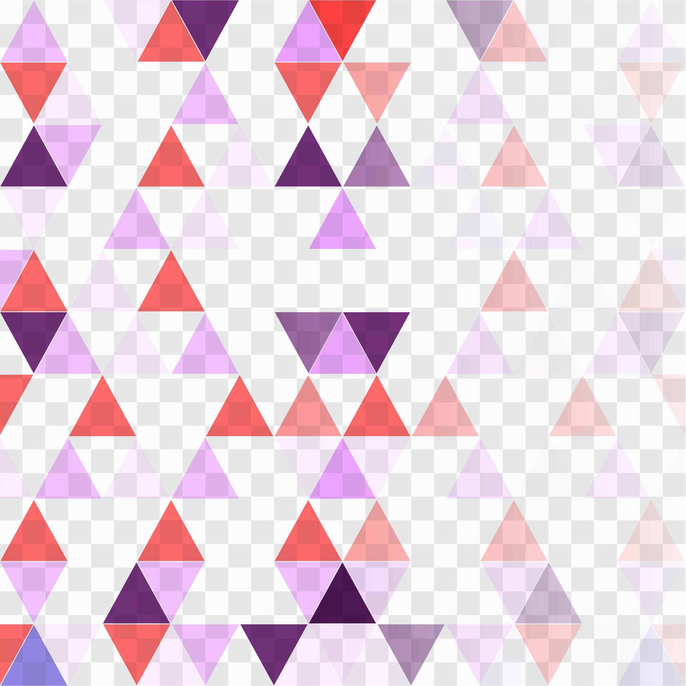

-
06 46 51 79 01
-
gorreta.cecilia@gmail.com
-
www.ceciliagorreta.fr
-
Les Jardins d'Ariella Traverse de la montre
FORMATIONS
-
- 2023-2024
Simplon Développeur web & mobile
Programme de formation axé sur les compétences numériques -
- 2019-2021
Référent numérique en entreprise
programme issu de la grande école du numérique -
- 2012-2016
Obtention du BAC PRO AMA
Artisanat métiers d’art option Communication Visuelle et Plurimédia
LOGICIELS
-
PHOTOSHOP
-
ILLUSTRATOR
-
CLIPSUTDIO PAINT
-
VISUAL STUDIO CODE
CENTRES D'INTERETS
-
Digital paint/ Art
-
Music
-
Jeux
GORRETA Cécilia
Demande de stage : developpeur web et mobile
du 07/02/24 au 15/03/24
du 07/02/24 au 15/03/24
 Compétences professionnelles
Compétences professionnelles
-
- • Collecter, gérer, traiter et communiquer des données
- • Prospecter en ligne pour fidéliser et augmenter une clientèle
- • Créer et gérer des sites web avec Wordpress
- • Contribuer à la gestion et au suivi d’un projet de communication numérique
- • Réaliser des outils de communication adaptés au support
- • Être un médiateur numérique
-
Compétences transversales
- • Contribuer activement à la cyber-sécurité
- • Faire preuve d’initiative
- • Gérer son temps
- • Résoudre un problème
-
OUTILS INFORMATIQUE MAÎTRISÉS
- Graphisme : Adobe créative suite
- Logiciel web : Wordpress, Filezilla, Keepass, Ubersuggest
- Collaboration : MS Office, MS Teams, G-suite, Airtable
- Langue : anglais, lu, écrit
Expériences professionnelles
-
2021 à 2022
Assistante Community Manager et Développement web
Esat st Jean Association hpf création d'un site e-commerce Recyclage & Création
-
2020
Web master en télétravail (stage)
- - Web Art Association
- - Aix-Marseille université
- - Les mains de mamies Boutique et atelier de vêtements
-
2019
Graphiste (stage)
Icomprovence Association
-
2012 à 2016
Graphiste en Agence de Com (stage)
- - My shirt
- - Erasmus 1er prix d’un concours européen de création de logo participation de 5 pays
- - P2mimage
- - Pixel Plus
- - Studio2création